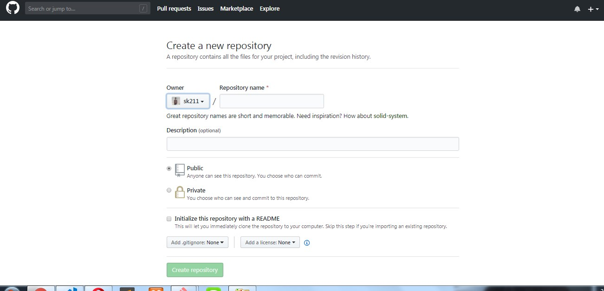

1st Open a Github account
Sing up Git
Create a new repository
Sing up Git

This code rune you command line
or create a new repository on the command line
echo "# new_repository" >> README.md
git init
git add README.md
git commit -m "first commit"
git remote add origin https://github.com/sk211/new_repository.git
git push -u origin master
…or push an existing repository from the command line
git remote add origin https://github.com/sk211/new_repository.git
git push -u origin master
Git download command
Git clone link.....
Git version check
git --version